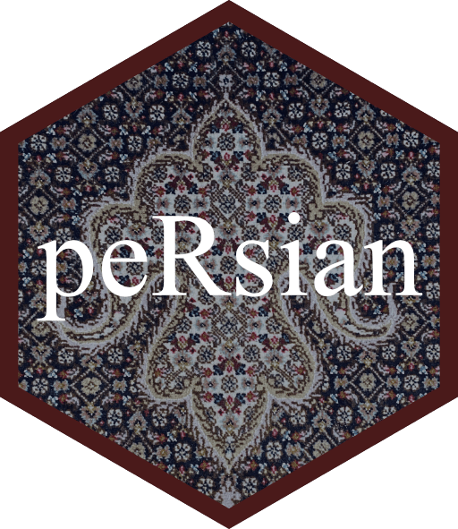

A Palette Generator Based on Persian Art
persian_palette.RdThis is a collection of color palettes based on artifacts of persian art.
Arguments
- name
Name of desired palette.
- n
Number of colors desired.
- type
Either "continuous" or "discrete". Use continuous if you want to automatically interpolate between colours
- direction
Sets the order of colors in the palette. If 1, the default, colors are as output in the palette. If -1, the order of colors is reversed.